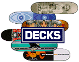
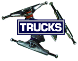
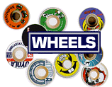

BUILD YOUR BOARD
The first thing that is necessary in the process of learning how to skate is getting yourself a board. It doesn't matter if it's a new pro skateboard or an old school model (if you are having trouble with this lingo check out the skate glossary of terms). I don't recommend getting a really new board because you are going to be taking quite a few tumbles and your board is going to get a beating, so go with a used one if possible.

Size of the deck is important. If you get one that is too heavy it will be really tough to get off the ground, and if you get one that's too small your toes and heels will be hanging over the edge! The perfect size is when both your toes and heels touch the edges when you step on the deck. If you are really illiterate to skate lingo, the deck is the piece of wood that you stand on, in other words the board. Something else to consider is whether you want a slick or wood deck. I recommend wood since it is lighter and cheaper, but obviously it's your choice.
Now that you have a deck picked out that is the right size, you want to get griptape, wheels, bearings and trucks. When you buy a deck they usually put griptape on for free, but if not it only costs about $10. Griptape is the sandpaper-like stuff on the surface of you board which makes you "stick" to it. Without griptape it is near impossible to ollie and perform other tricks.

Trucks are the aluminun part with steel axles that connect the wheels to the deck. The trucks help you to steer, and the better your trucks the tighter turns you'll be able to make. Trucks are quite expensive, but it's worth the price in the long run.

Wheels and bearings are pretty obvious from there names. I don't think wheels are too important on a skateboard, but size is. The smaller your wheels the slower you will go, but you will also accelerate faster. The bigger the wheels the faster (and smoother ride) you will go but it takes a while to get up to speed. Bigger wheels make it easier 'cause they roll over pebbles and rough surfaces. A good size to start off with is about 55mm in diameter.
Bearings help you go either faster or slower, but I usually buy the inexpensive ones because they don't last very long anyway to make a large investment in them. Some good brands are Shorty's "Quickies" or Shorty's "Black Panthers".
Now you've got your skateboard set up, you just have to learn how to ride it!